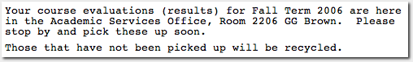

Making sense of the cacophony

Emanating merely from a fortuitous alignment of the stars—or an assiduously calculated scheme driven by my desperation to pay for grad school (one can never be too sure about this sort of thing)—I had, in the fall of 2006, a most fascinating and enjoyable experience helping teach a junior level material mechanics course: ME 382. The quasi-teacher's hat that I'd just donned (apart from legitimising my absence from the lab) allowed me to interact with curious, eager young minds full of energy, and it was such a gratifying experience helping mould them in my little way.
(In actuality, the experience mostly involved walking the young'uns through their weekly homework and I was rather engulfed in its soul-destroying monotony, but this is my story and I intend on fully embellishing it. If you have a problem with that, I suggest you write your own story; one that's filled with your precious facts.)
As is customary here at the university, toward the end of the semester, the students are given an opportunity to provide feedback on (and to) their instructors. Designed to help the teacher improve, this feedback is solicited in the form of a pseudo-objective poll and a more traditional questionnaire. Being that these evaluations were carried out a few months ago, and in the interim I'd moved on to other remarkably fun and stimulating tasks (there are a ton of those going around when you're camped in graduate school), they had slipped my mind. That is, until I received an innocuous looking e-mail a short while earlier.
The importance placed on this feedback oozes from that last line.
"Who responds to these? I certainly don't," I muttered to myself as I began to tear open the large orange envelopes half-expecting them to be nearly empty. Much to my surprise, it turns out everyone responds to these things and don't just treat filling them out as 15–20 minutes of freedom from their regular lecture. As I begun reading through the copious brazen commentary, I decided it'd be a swell idea to offer the world a totally random (yeah, right) sample from this overwhelming pool. Why? I don't know, I just did.
There is, however, the little matter of this:

Obviously, when questioned, I'm going to inform them that I didn't know it was to be confidential even after I'd procured the envelope. And, with that out of the way, I think it's high time we turned to the actual responses.